Supportive Graphic Methods
Wolfgang Rannetbauer, Birgit Karlhuber
Source:vignettes/VisualImp.Rmd
VisualImp.RmdOverview
In addition to imputation methods, VIM provides a number
of functions, which can be used to plot results in sophisticated
ways.
This vignette showcases selected plotting functions, which are very supportive in context with visualizing missing and imputed values.
Data
The following example demonstrates the functionality of the plotting
functions using a subset of sleep. In order to emphasize
the features of the methods, the missing values in the dataset are
imputed via kNN() or regressionImp(). Both are
powerful donor-based imputation methods and also included in the
VIM package. (see vignette("donorImp"))
library(VIM)
dataset <- sleep[, c("Dream", "NonD", "BodyWgt", "Span")] # dataset with missings
dataset$BodyWgt <- log(dataset$BodyWgt)
dataset$Span <- log(dataset$Span)
imp_knn <- kNN(dataset) # dataset with imputed valuesTo keep things as simple as possible, the plotting functions in
VIM uses three main colors. Each color represents a
property:
- BLUE observed values are highlighted in blue
- RED missing values are highlighted in red
- ORANGE imputed values are highlighted in orange
Function aggr()
The aggr() function calculates or plots the amount of
missing/imputed values in each variable and the amount of
missing/imputed values in certain combinations of variables.
aggr(dataset) 
aggr(imp_knn, delimiter = "_imp") 
The plots indicate that all missing values in the dataset are imputed
via knn(). (All the previously red bars changed their color
to orange)
Function barMiss()
The barMiss() function provides a barplot with
highlighting of missing/imputed values in other variables by splitting
each bar into two parts. Additionally, information about missing/imputed
values in the variable of interest is shown on the right hand side.
If only.miss=TRUE, the missing/imputed values in the
variable of interest are visualized by one bar on the right hand side.
If additional variables are supplied, this bar is again split into two
parts according to missingness/number of imputed missings in the
additional variables.

# for imputed values
x_IMPUTED <- regressionImp(NonD ~ Sleep, data = x)
#> There still missing values in variable NonD . Probably due to missing values in the regressors.
barMiss(x_IMPUTED, delimiter = "_imp", only.miss = FALSE) The plot indicates that there are still some missings in NonD. This is
because the regression model could not be applied to observations, where
Sleep is unobserved.
The plot indicates that there are still some missings in NonD. This is
because the regression model could not be applied to observations, where
Sleep is unobserved.
Function scattMiss()
In addition to a standard scatterplot, lines are plotted in
scattMiss() for the missing values in one variable. If
there are imputed values, they will be highlighted.
Information about missing values in one variable is included as
vertical or horizontal lines, as determined by the side
argument. The lines are thereby drawn at the observed x- or y-value. In
case of imputed values, they will additionally be highlighted in the
scatterplot. Supplementary, percentage coverage ellipses can be drawn to
give a clue about the shape of the bivariate data distribution.
In contrast to the other examples, regressionImp() is
used for imputing missing values. This has been done deliberately to
highlight the functionality of scattMiss(). The following
plots makes it easy to indentify missing/imputed values.

# for imputed values
imp_regression <- regressionImp(NonD ~ Sleep, dataset)
#> There still missing values in variable NonD . Probably due to missing values in the regressors.
scattMiss(imp_regression[,-3], delimiter = "_imp")
The plot indicates that there are still some missings in
NonD. This is because the regression model could not be
applied to observations, where Sleep is unobserved.
Function histMiss()
The histMiss() function visualizes data in a histogram
with highlighting the missing/imputed values in other variables by
splitting each bin into two parts. Additionally, information about
missing/imputed values in the variable of interest is shown on the right
hand side.
If only.miss=TRUE, the missing/imputed values in the
variable of interest are visualized by one bar on the right hand side.
If additional variables are supplied, this bar is again split into two
parts according to missingness/number of imputed missings in the
additional variables.

# for imputed values
x_IMPUTED <- regressionImp(NonD ~ Sleep, data = x)
#> There still missing values in variable NonD . Probably due to missing values in the regressors.
histMiss(x_IMPUTED, delimiter = "_imp", only.miss = FALSE)
Function matrixplot()
The matrixplot() function creats a matrix plot, in which
all cells of a data matrix are visualized by rectangles. Available data
is coded according to a continuous color scheme, while missing/imputed
data is visualized by a clearly distinguishable color.
x <- sleep[, c("Dream", "NonD","Sleep", "BodyWgt")]
x$BodyWgt <- log(x$BodyWgt)
# for missing values
matrixplot(x, sortby="BodyWgt")
# for imputed values - multiple variable imputation with regrssionImp()
x_IMPUTED <- regressionImp(NonD + Dream ~ Sleep, data = x)
#> There still missing values in variable NonD . Probably due to missing values in the regressors.
#> There still missing values in variable Dream . Probably due to missing values in the regressors.
matrixplot(x_IMPUTED, delimiter = "_imp", sortby = "BodyWgt")
Function marginplot()
In addition to a standard scatterplot, information about missing/imputed values is shown in the plot margins. Furthermore, imputed values are highlighted in the scatterplot.
Boxplots for available and missing/imputed data, as well as univariate scatterplots for missing/imputed values in one variable are shown in the plot margins.Imputed values in either of the variables are highlighted in the scatterplot.
Furthermore, the frequencies of the missing/imputed values can be displayed by a number (lower left of the plot). The number in the lower left corner is the number of observations that are missing/imputed in both variables.
dataset <- sleep[, c("Dream", "NonD", "BodyWgt", "Span")]
dataset$BodyWgt <- log(dataset$BodyWgt)
dataset$Span <- log(dataset$Span)
imp_knn <- kNN(dataset, variable = "NonD")
dataset[, c("NonD", "Span")] |>
marginplot()
imp_knn[, c("NonD", "Span", "NonD_imp")] |>
marginplot(delimiter = "_imp")
Function marginmatrix()
The marginmatrix() function creates a scatterplot matrix
with information about missing/imputed values in the plot margins of
each panel.
## for missing values
x <- sleep[, 2:4]
x[, 1] <- log10(x[, 1])
marginmatrix(x)
## for imputed values
x_imp <- irmi(sleep[, 2:4])
x_imp[,1] <- log10(x_imp[, 1])
marginmatrix(x_imp, delimiter = "_imp")
Function pbox()
The function pbox(), can be used to create parallel
boxplots of one variable of interest with information about missing/
imputed values in other variables.
dataset <- sleep[, c("Dream", "NonD", "BodyWgt", "Span")] # dataset with missings
# for missing values
dataset$BodyWgt <- log(dataset$BodyWgt)
dataset$Span <- log(dataset$Span)
pbox(dataset)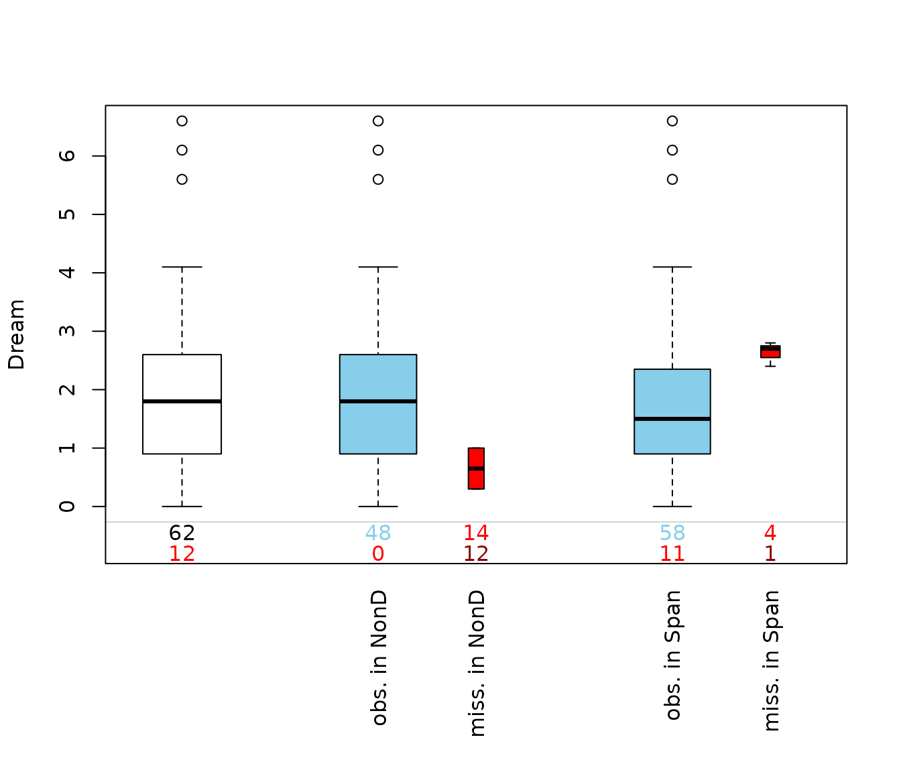
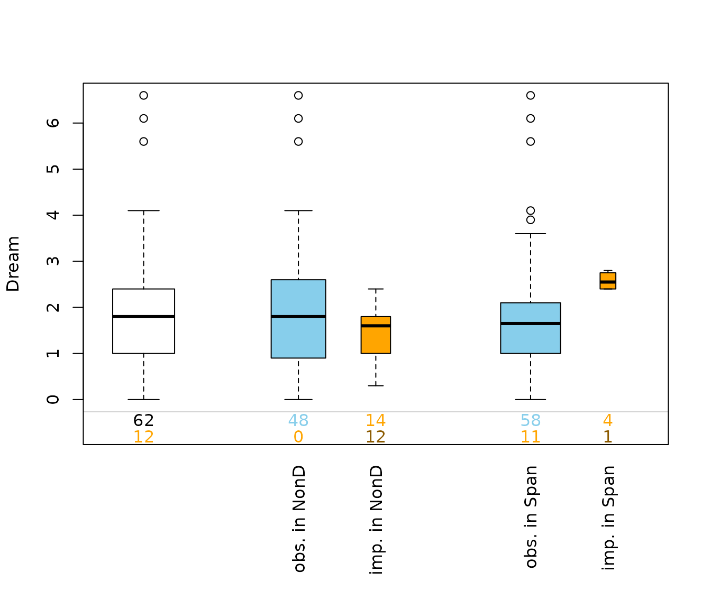
This plot consists of several boxplots. The first, white plot, is a
standard boxplot of the variable of interest, in this case of the
variable Dream. Second, boxplots grouped by observed and missing/imputed
values according to selection are produced for the other
variables, NonD and Span.
Additionally, the frequencies of the missing/imputed values can be represented by numbers. If so, the first line corresponds to the observed values of the variable of interest and their distribution in the different groups, the second line to the missing/imputed values.
If interactive=TRUE, clicking in the left margin of the
plot results in switching to the previous variable and clicking in the
right margin results in switching to the next variable. Clicking
anywhere else on the graphics device quits the interactive session.
Function parcoordMiss
The function parcoordMiss(), can be used to create a
parallel coordinate plot with adjustments for missing/imputed
values.
dataset <- sleep[, c("Dream", "NonD", "BodyWgt", "Span")] # dataset with missings
## for missing values
parcoordMiss(dataset, plotvars=2:4, interactive = FALSE)
legend("top", col = c("skyblue", "red"), lwd = c(1,1),
legend = c("observed in Dream", "missing in Dream"))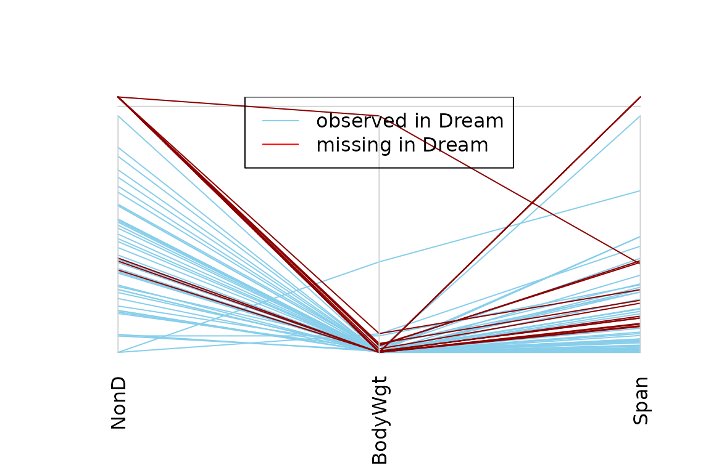
## for imputed values
parcoordMiss(kNN(dataset), plotvars=2:4, delimiter = "_imp" ,
interactive = FALSE)
legend("top", col = c("skyblue", "orange"), lwd = c(1,1),
legend = c("observed in Dream", "imputed in Dream"))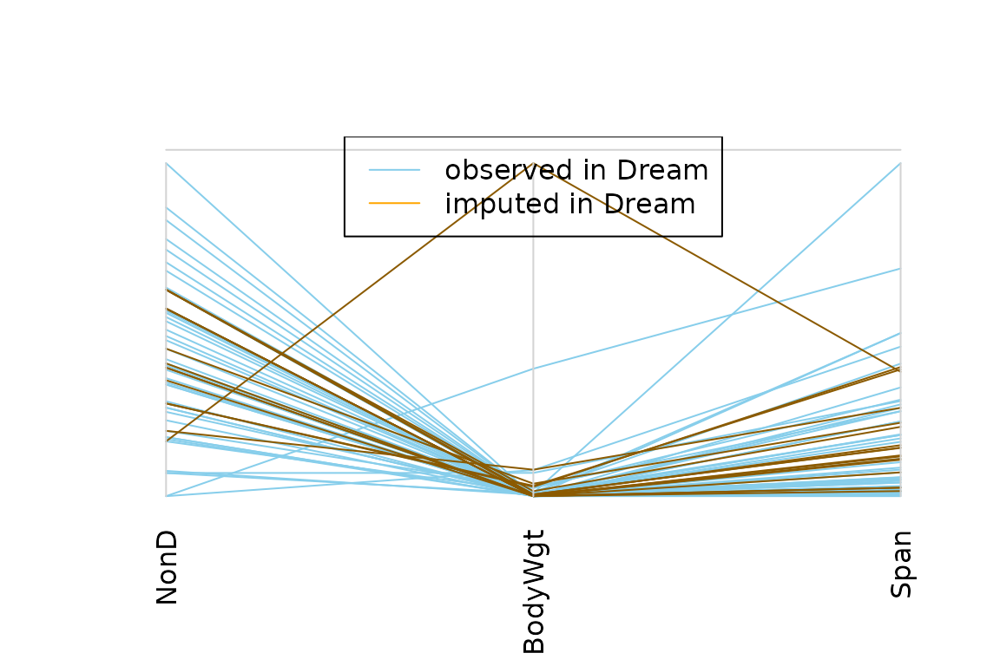
Missing values in the plotted variables may be represented by a point above the corresponding coordinate axis to prevent disconnected lines. In addition, observations with missing/imputed values in selected variables may be highlighted.
Function spineMiss
The function spineMiss(), can be used to create a
spineplot or spinogramm and highlights missing/imputed values in other
variables by splitting each cell into two parts. Additional information
about missing/imputed values in the variable of interest is shown on the
right hand side.
data(sleep, package = "VIM") # dataset with missings
table(sleep$Exp) # categorical variable of interest
#>
#> 1 2 3 4 5
#> 27 13 4 5 13
## for missing values
spineMiss(sleep[, c("Exp", "Sleep")])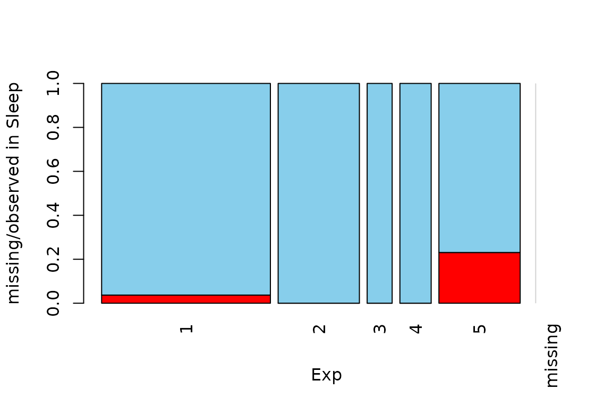
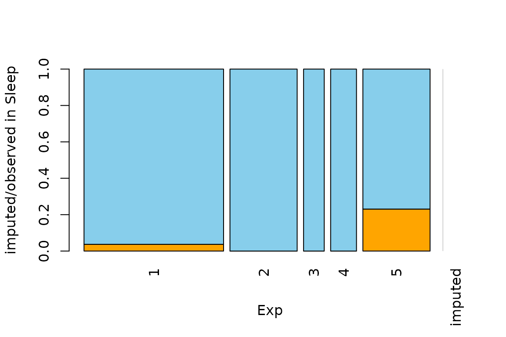
The variable of interest (Exp) is a categorical
variable, because of this the function creates a spineplot. Thus the
proportion of highlighted observations in each category/class is
displayed on the vertical axis. This fact allows to compare the
proportions of missing/imputed values among the different
categories/classes.
Function mosaicMiss
The function mosaicMiss(), can be used to create a
mosaic plot with information about missing/imputed values.
Mosaic plots are graphical representations of multi-way contingency tables. The frequencies of the different cells are visualized by area-proportional rectangles (tiles). Additional tiles are be used to display the frequencies of missing/imputed values. Furthermore, missing/imputed values in a certain variable or combination of variables can be highlighted in order to explore their structure.
## for missing values
# using the three categorical variables Pred, Exp and Danger
mosaicMiss(sleep, highlight = 4, plotvars = 8:10, miss.labels = FALSE) 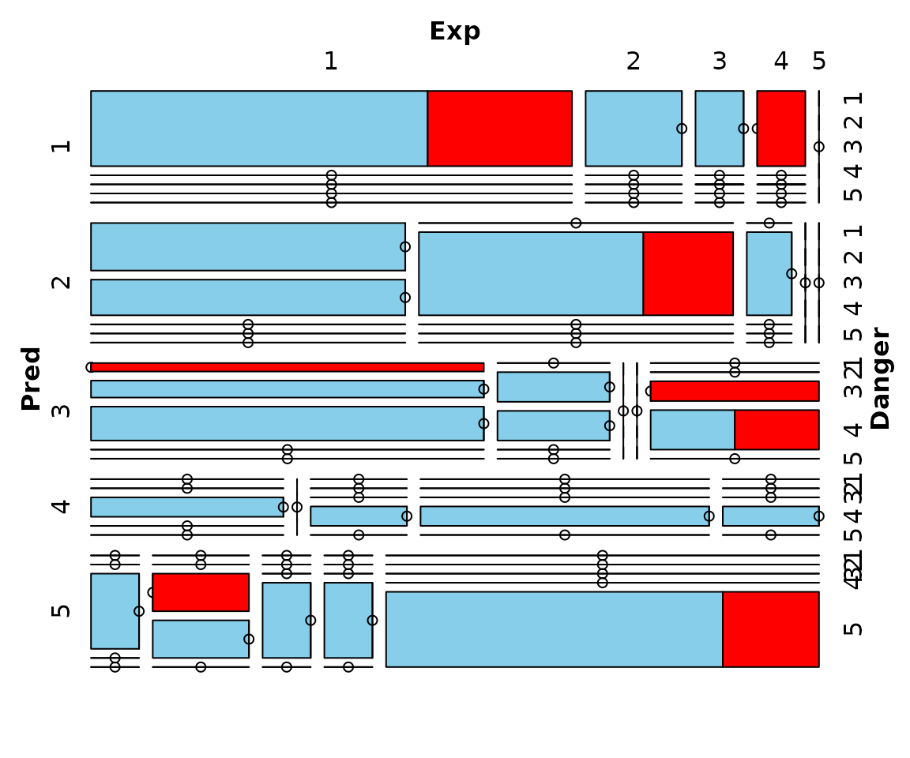
## for imputed values
mosaicMiss(kNN(sleep), highlight = 4, plotvars = 8:10, delimiter = "_imp",
miss.labels = FALSE)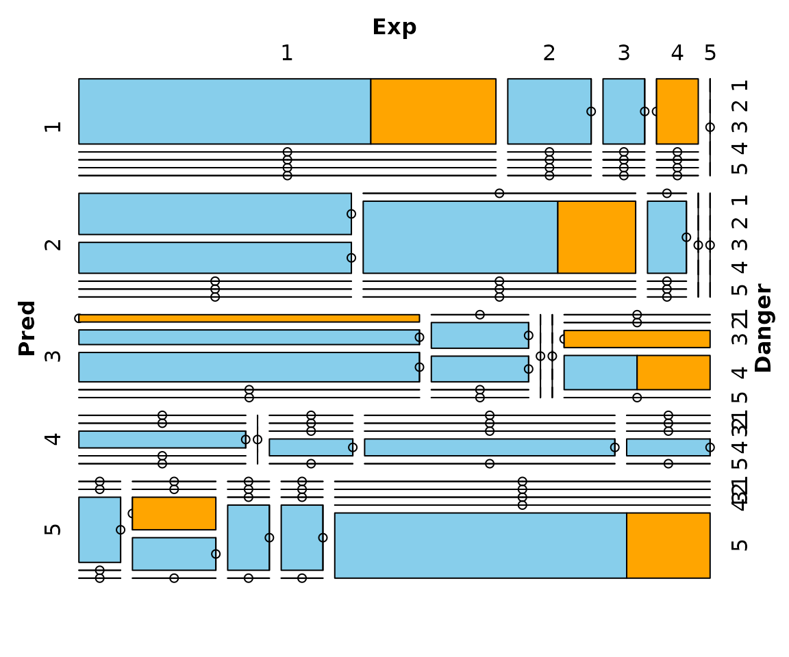
Function scattmatrixMiss
The function scattmatrixMiss(), can be used to create
scatterplot matrix in which observations with missing/imputed values in
certain variables are highlighted.
## for missing values
x <- sleep[, 1:5]
x[,c(1,2,4)] <- log10(x[,c(1,2,4)])
scattmatrixMiss(x, highlight = "Dream")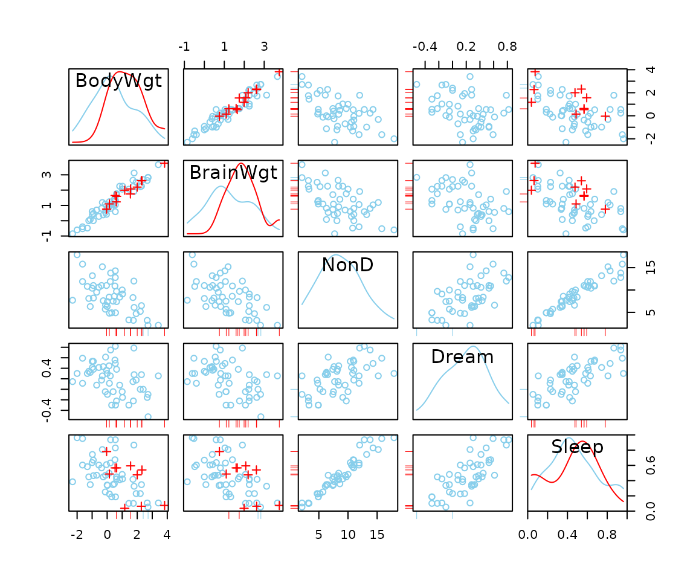
## for imputed values
x_imp <- kNN(sleep[, 1:5])
x_imp[,c(1,2,4)] <- log10(x_imp[,c(1,2,4)])
scattmatrixMiss(x_imp, delimiter = "_imp", highlight = "Dream")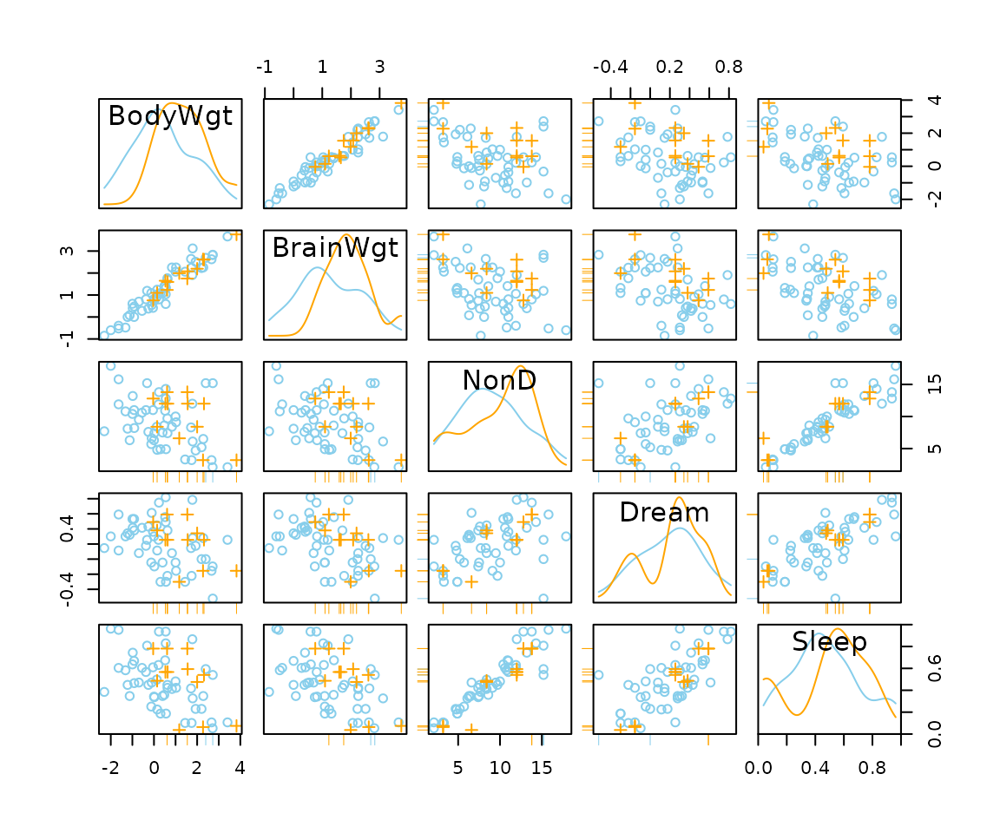
Function scattJitt
The function scattJitt(), can be used to create a
bivariate jitter plot. The amount of observed and missing/imputed values
is visualized by jittered points. Thereby the plot region is divided
into up to four regions according to the existence of missing/imputed
values in one or both variables. In addition, the amount of observed and
missing/imputed values can be represented by a number.
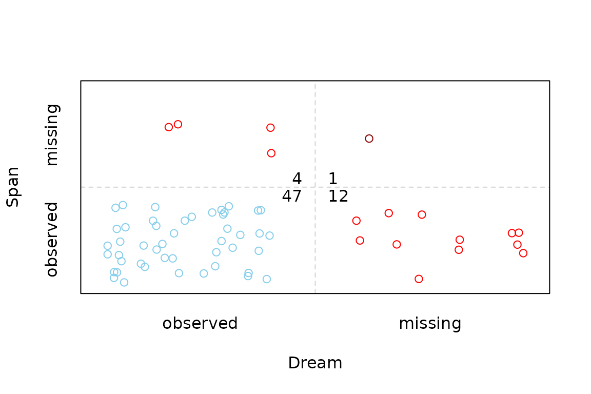
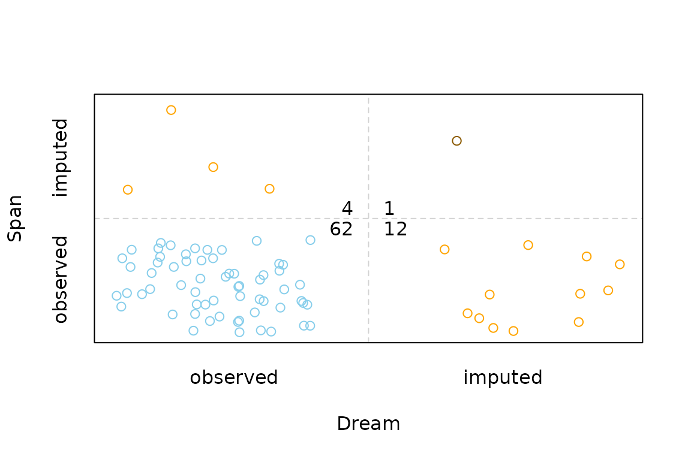
Additional functions
These functions are not intended for direct use, but are used by the other plotting functions.
Function pairsVIM
The function scattJitt(), can be used to create a
scatterplot matrix. This function is also used by
scattmatrixMiss().
Function colSequence
The function colSequence(), can be used to compute color
sequences by linear interpolation based on a continuous color scheme
between certain start and end colors. Color sequences may thereby be
computed in the HCL or RGB color space.
p <- c(0, 0.3, 0.55, 0.8, 1)
## HCL colors
colSequence(p, c(0, 0, 100), c(0, 100, 50))
#> [1] "#FFFFFF" "#FAC8D1" "#F09AAB" "#E16A86" "#D33F6A"
colSequence(p, polarLUV(L=90, C=30, H=90), c(0, 100, 50))
#> [1] "#E2E6BD" "#DBBD80" "#DB975E" "#D86B5B" "#D33F6A"
## RGB colors
colSequence(p, c(1, 1, 1), c(1, 0, 0), space="rgb")
#> [1] "#FFFFFF" "#FFDADA" "#FFB3B3" "#FF7C7C" "#FF0000"
colSequence(p, RGB(1, 1, 0), "red")
#> [1] "#FFFF00" "#FFDA00" "#FFB300" "#FF7C00" "#FF0000"Function rugNA
The function rugNA(), can be used to add a rug
representation of missing/imputed values in only one of the variables to
scatterplots.
If side is 1 or 3, the rug representation consists of values available in x but missing/imputed in y. Else if side is 2 or 4, it consists of values available in y but missing/imputed in x.
## for missing values
x <- sleep[, "Dream"]
y <- sleep[, "Span"]
plot(x, y)
rugNA(x, y, side = 1)
rugNA(x, y, side = 2)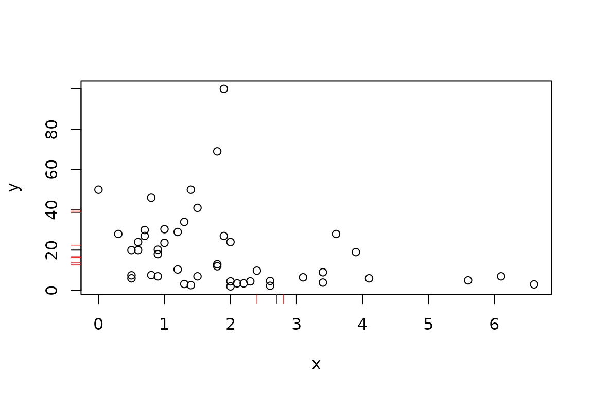
Function alphablend
The function alphablend(), can be used to convert colors
to semitransparent colors.
alphablend("red", 0.6)
#> [1] "#FF000099"